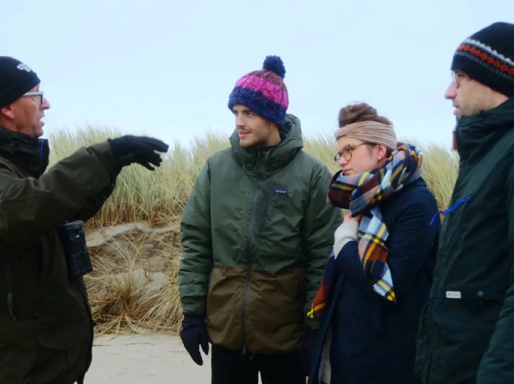
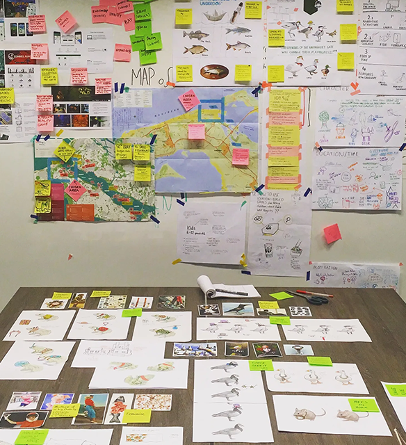
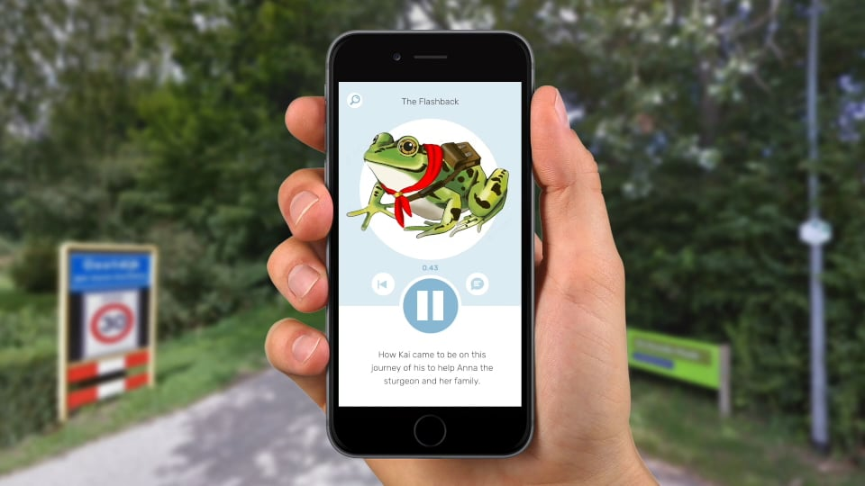

Context
Nature and technology, working together
WWF asked us to digitally enhance nature as part of a project for my Master’s. How could these apparent opposites, the artificial and the natural, reinforce one another?
The primary goal was to create awareness of WWF’s active role in local nature preservation and development, and its relevance to the world we live in. The project targeted families with children aged 6–12.
Opportunity
Meaning, not more screen time
Like most of us, children spend a lot of time behind screens. If we truly want this generation to appreciate the value of nature, there’s nothing like experiencing it for themselves. A location-based game was the way to go.
The temptation of technologies such as AR and VR was strong. But according to research, for children who grow up with an overload of technology, the only way to spark engagement is by creating meaning. So alongside the narrative, striking the right balance between the natural and the artificial was crucial.
Approach
Delta Rangers: an adventure led by audio
After comparing different technological and conceptual directions, we decided on an app that:
- lets families embark on an adventure together as “Delta Rangers”;
- tells the story of the animals primarily through audio, so nobody disconnects from their surroundings;
- lets you earn badges by completing direct interactions with nature itself;
- gives children a sense of agency, as they take on the role of biologist, explorer or team leader;
- adds an educational layer about the animals you encounter;
- lets you save your journey, retrace your steps and share the experience through a web-based platform, maximising the reach of WWF’s activities.


Outcome
WWF kept it going
Working on a meaningful case like this, for a client like the World Wildlife Fund, was a truly satisfying experience. And the fact that WWF decided to let a second student team keep working on it throughout the final semester pretty much says it all.

Watch the demo